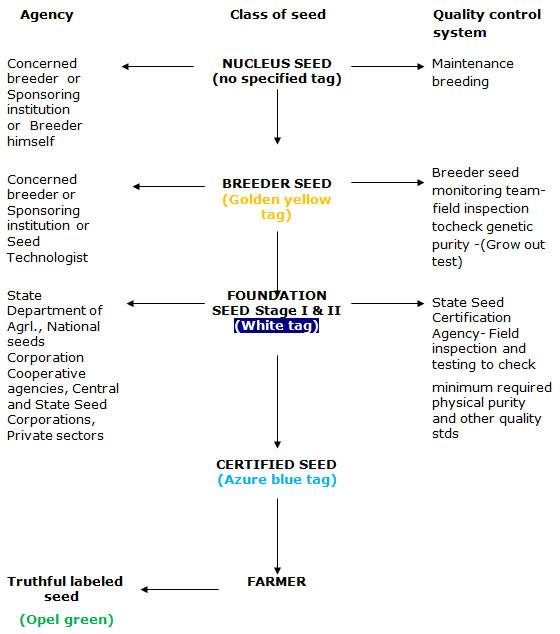

GPBR 112 :: Lecture 06 :: CLASSES OF SEED

The four generally recognized classes of seeds are: Breeder's seed, Foundation seed, Registered seed and Certified seed. The Association of Official Seed Certifying Agencies (AOSCA) has defined these seed classes as follows:
Breeder seed
The seed or vegetatively propagated material directly controlled by the originating or the sponsoring breeder or institution which is the basic seed for recurring increase of foundation seed.
Foundation seed
It is the progeny of breeder seed. The seed stock handled to maintain specific identity and genetic purity, which may be designated or distributed and produced under careful supervision of an agricultural experiment station. This seed is the source of all other certified seed classes either directly or through registered seed.
Registered seed
The progeny of the foundation seed so handled as to maintain its genetic identity and purity and approved and certified by a certifying agency. It should be of quality suitable to produce certified seed.
Certified seed
It is the progeny of the foundation seed. Its production is so handled to maintain genetical identity and physical purity according to standards specified for the crop being certified. It should have the minimum genetical purity of 99%. Certified seed may be the progeny of certified seed , provided this reproduction does not exceed two generations beyond foundation seed and provided that if certification agency determines the genetic and physical purity, if not be significantly altered. In case of highly self pollinated crops certification of one further generation may be permitted. Certified seed produced from certified seed shall be eligible for further seed increase under certification, except in case of highly self-pollinated crops, where certification of one further generation may be permitted. Certification tags issued once for certified seed not eligible for further seed increase under certification.
- For paddy and wheat , certified seed produced from certified seed is eligible for certification by NSC up to two generations from foundation seed
Foundation seed - Certified seed (I) - Certified seed (II)
- For barley, garden pea ,ground nut, soyabean, certified seed produced from certified seed is eligible for certification up to 3 generations from foundation seed
Foundation seed - Certified seed (I) - Certified seed (II) - Certified seed (III)
Certification of certified seed produced from certified seed is not permitted for crops other than those listed above.
Differences between certified seed and truthful labelled seed
Certified seed |
Truthful labelled seed |
Certification is voluntary |
Truthful labelling is compulsory for notified kind of varieties |
Applicable to notified kinds only |
Applicable to both notified and released varieties |
It should satisfy both minimum field and seed standards |
Tested for physical purity and germination |
Seed certification officer ,seed inspectors can take samples for inspection |
Seed inspectors alone can take samples for checking the seed quality. |
GENERATION SYSTEM OF SEED MULTIPLICATION
Generation system of seed multiplication
Generation system of seed multiplication is nothing but the production of a particular class of seed from specific class of seed up to certified seed stage. The choice of a proper seed multiplication model is the key to further success of a seed programme. This basically depends upon
- The rate of genetic deterioration
- Seed multiplication ratio and
- Total seed demand
Based on these factors different seed multiplication models may be derived for each crop and the seed multiplication agency should decide how quickly the farmers can be supplied with the seed of newly released varieties, after the nucleus seed stock has been handed over to the concerned agency, so that it may replace the old varieties. In view of the basic factors, the chain of seed multiplication models could be.,
- Three - Generation model
Breeder seed - Foundation seed - Certified seed
b. Four - Generation model
Breeder seed - Foundation seed (I) Foundation seed (II) - Certified seed
c. Five - Generation model
Breeder seed - Foundation seed (I)- Foundation seed (II) -Certified seed (I) - Certified seed (II)
For most of the often cross pollinated and cross pollinated crops 3 & 4 generation models is usually suggested for seed multiplication. Ex: Castor, Redgram, Jute, Greengram, Rape, Mustard, Sesame, Sunflower and most of the vegetable crops.
GENERATION SYSTEM OF SEED MULTIPLICATION AND QUALITY CONTROL (NOTIFIED VARIETIES AND HYBRIDS)

Nucleus and Breeders seed production
The initial handful of seeds obtained from selected individual plants of a particular variety, for the purposes purifying and maintaining that variety by the originating plant breeder and its further multiplication under his own supervision, or the supervision of a qualified plant breeder, to provide Breeder’s Seed constitutes the basis for all further seed production. The varietal purity of subsequently multiplied foundation, registered and certified seed largely depend upon the quality of the nucleus/breeder’s seed. Unless the nucleus/ breeder’s seed is of highest purity and quality the seed multiplied from it cannot be regarded as of satisfactory genetic purity. Unsatisfactory genetic purity, especially in cross pollinated crops, could ultimately severely affect the performance of a variety. It is therefore, of utmost importance that the nucleus/breeder’s seed is produced in such a manner that satisfactory genetic purity, identity and the other good qualities of seed are maintained.
Methods of maintenance of nucleus and breeder’s seed in self fertilized crops
Methods of maintaining nucleus seed/breeder’s can be conveniently divided into the following two groups:
- Maintenance of newly released varieties
- Maintenance of established varieties
Maintenance of Nucleus Seed of Pre-released or Newly Released Varieties
The procedure outlined by Harrington (1952) for the maintenance of nucleus seed of pre-released or newly released varieties is described below:
- Sampling of the variety to obtain nucleus seed. New numbers, lines or selection which are highly promising, on the basis of performance in breeding nurseries and yield trials, should be sampled for seed purification. These samples provide a beginning for purifying new varieties and for possible increase and distribution to farmers. Not more than fifteen new varieties in any one crop at a station should be sampled in one year.
- Table examination of samples: The two hundred plants of each sample should be threshed separately and the seed should be examined in piles on the table. Discard any pile appearing obviously off type, diseased or otherwise unacceptable. The seeds of each two hundred plant samples or less is now ready to be sown in a variety purification nursery called as nucleus.
- Locating and seeding of nucleus: Each nucleus seed should be grown on clean fertile land at an experiment station in the region or in area in which this new variety could be grown, in the event of its release. The land must not have had a crop of the same kind in the previous year.
- Inspection of nucleus two-row plots and removal of off types: Throughout the season of growth, from the seedling stage until maturity, the nucleus plot should be examined critically. Differences in the habit of early plant growth, leaf colour, rate of growth, time of heading, height head characteristics and diseases reactions should be looked for. If a plot differs distinctly from the average in the preheading stages of growth, it should be removed before heading.
- Harvesting and threshing of nucleus; each remaining plot, of which there should be at least 180 out of the original 200. Should be harvested individually with a sickle and tied in a bundle. The total bundles of each nucleus should be labelled and stored until the current years yield rests for trials are obtained. The nucleus bundles of any new variety should be discarded, if it is found unworthy of being continued.
Later the seed should be cleaned in a fanning mill or by hand methods, the grain from each nucleus plot being placed in a pile on the seed table. The 180 or more piles of seed of one nucleus must be examined for approximate uniformity of seed appearance, and any pile, which appears to be off type discarded. All the remaining piles of the seed should be masked together in one lot. This should treated with fungicide and insecticide, bagged, labelled and stored as "Breeder’s Stock Seed" for use in the next year. Breeder’s stock seed is the original purified seed stock of a new variety in the hands of the plant breeders.
Maintenance of Breeder’s Seed of Pre-released or Newly Released Varieties
The following steps are involved in the maintenance of breeder’s seed.
- Breeder’s stock seed from the nucleus should be sown on the clean, fertile land, which did not grow a crop of the same kind in the previous year. The space required for the seeding the breeder’s stock is about 1.2 ha in the case of wheat and as much as 3 ha in the case of transplanted rice.
- The field should properly isolated.
- The best farm procedures should be used in the sowing, raising and harvesting of breeder’s stock.
- It should be produced at the experiment station in the area in which the new variety has been bred.
- The seeding should be done in such a way as to make the best use of the limited amount of seed available and to facilitate roguing. The row spacing should be sufficient to permit examination of plants in rows for possible mixture or off types.
- Roguing: All plants not typical of the variety should be pulled and removed. There should be very few plants to rogue out if the previous years nucleus breeder’s stock seed was well protected from natural crossing and careful roguing was done and there were no impurities during cleaning etc. The rouging should be done before flowering, as was done for the nucleus/breeder’s stock seed.
- Harvesting the breeder’s stock: In the breeder’s stock is harvested and threshed, the equipment used must be scrupulously clean and free from seeds of any other varieties. This cleanliness should be extended to cards and bags as well as threshing machine it self. The seed should now be about 99.9 per cent pure as to variety. These breeder’s seed is ready now for increase of foundation seed. A portion of this breeder’s seed should be retained by the breeders to sown a continuation breeders seed of the variety.
Maintenance of breeder’s seed of established varieties
The breeder’s seed of established varieties could be maintained satisfactorily by any one of the following methods
a) By raising the crop in isolation: The breeder’s seed of local varieties could be maintained by growing them in isolated plots and by very rigorous roguing during various stages of crop growth, where the various plant characters are observable. The method of handling the breeder seed crop is the same as described earlier for breeder’s seed of newly released varieties.
b) By bulk selection: The genetic purity of established varieties could be satisfactorily improved by bulk selection. In this method 2,000 to 2,500 plants typical of the variety are selected, harvested ,and threshed separately. The seeds from each plant are examined and any pile which shows any obvious off-types, or otherwise appears dissimilar, are discarded. The remaining piles of seed are bulked to constitute the breeder’s seed. The other practices of handling remains the same.
Carry-over Seed
The breeder must carry-over at least enough seed to safeguard against, the loss of variety if there is a complete failure during the foundation seed multiplication phase. In addition, the breeder should further safeguard variety by arranging to have a portion of the seed originally released stored under the ideal conditions.
| Download this lecture as PDF here |